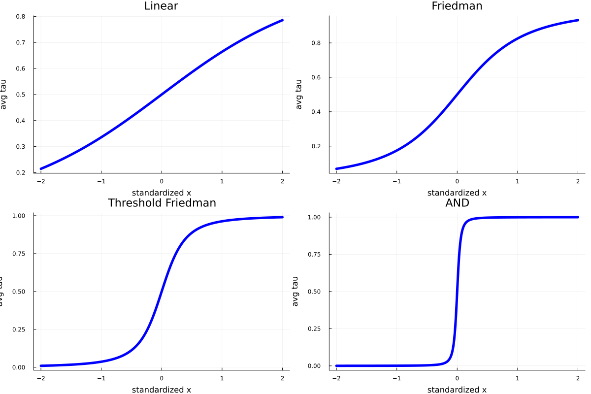

Plotting and printing τ values
Summary
- Simulates a dataset from four different functions.
- For each dataset, plots the average (across features) value of τ (weighted by importance).
- For a specific function, prints a detailed breakdown to screen
Main points
- The average tau across all features provides a rough estimate of the overall smoothness of f(x), and therefore of the expected gains from HTBoost.
- The function may be considerably more nonlinear than what plots of a single value of tau may imply! Average values of tau mostly provide a guide to the gains that can be obtained by HTBoost: to gauge the nonlinearity of the function, these numbers should be supplemented by partial effect plots.
Import HTBoost and other required packages
number_workers = 8 # desired number of workers
using Distributed
nprocs()<number_workers ? addprocs( number_workers - nprocs() ) : addprocs(0)
@everywhere using HybridTreeBoosting
using Random,Plots
# USER'S OPTIONS
Specify some user's options
# dgp: four increasingly irregular functions
dgp_a = ["Linear","Friedman","Threshold Friedman","AND"]
which_function = 3 # for which function to print detailed break-down
# Some options for HTBoost
loss = :L2
modality = :fast # :accurate, :compromise (default), :fast, :fastest
priortype = :hybrid # :hybrid (default) or :smooth to force smoothness
nfold = 1 # number of cv folds. 1 faster (single validation sets), default 4 is slower, but more accurate.
nofullsample = true # if nfold=1 and nofullsample=true, the model is not re-fitted on the full sample after validation of the number of trees
randomizecv = false # false (default) to use block-cv.
verbose = :Off
warnings = :Off
# options to generate data. y = sum of six additive nonlinear functions + Gaussian noise.
n,n_test = 10_000,100_000
stde = 1.0
rndseed = 1234
Four functions, increasingly irregular (from linearity to sharp splits)
function simulatedata(n,stde;rndseed=1,dgp="Friedman")
Random.seed!(rndseed)
if dgp=="Linear"
p = 5
x = randn(n,p)
f = x[:,1] + x[:,2] + x[:,3] + x[:,4] + x[:,5]
y = f + stde*randn(n)
elseif dgp=="Friedman"
p = 5
x = rand(n,p) # for Friedman function x is uniform
f = 10.0*sin.(π*x[:,1].*x[:,2]) + 20.0*(x[:,3].-0.5).^2 + 10.0*x[:,4] + 5.0*x[:,5]
y = f + stde*randn(n)
elseif dgp=="Threshold Friedman"
p = 6
x = rand(n,p) # for Friedman function x is uniform
f1 = 10.0*sin.(π*x[:,1].*x[:,2]) + 20.0*(x[:,3].-0.5).^2 + 10.0*x[:,4] + 5.0*x[:,5]
f2 = 0.5*f1
f = f1.*(x[:,6].<0.5) + f2.*(x[:,6].>0.5)
y = f + stde*randn(n)
elseif dgp=="AND"
p = 3
x = randn(n,p)
f = 10*( (x[:,1].>0.3).*(x[:,2].>0.3).*(x[:,3].>0.3) ) # same threshold: symmetric trees outperform
y = f + stde*randn(n)
end
return y,x,f
end
For each function, generate a dataset, fit HTBoost, store output
output_a = Vector(undef,length(dgp_a))
for (i,dgp) in enumerate(dgp_a)
y,x,f = simulatedata(n,stde,rndseed=rndseed,dgp=dgp)
y_test,x_test,f_test = simulatedata(100_000,stde,rndseed=rndseed,dgp=dgp)
param = HTBparam(loss=loss,priortype=priortype,randomizecv=randomizecv,nfold=nfold,verbose=verbose,warnings=warnings,
modality=modality,nofullsample=nofullsample)
data = HTBdata(y,x,param)
output = HTBfit(data,param)
output_a[i] = output
end
Plotting average values for each function
pl = Vector(undef,length(dgp_a))
for i in eachindex(dgp_a)
avgtau,gavgtau,avgtau_a,dftau,x_plot,g_plot = HTBweightedtau(output_a[i],data,verbose=false,best_model=false);
pl[i] = plot( x_plot,g_plot,
title = dgp_a[i],
legend = :bottomright,
linecolor = [:blue],
linestyle = [:solid],
linewidth = [5],
titlefont = font(15),
legendfont = font(12),
xlabel="standardized x",
ylabel="avg tau",
label=:none,
)
end
display(plot(pl[1],pl[2],pl[3],pl[4],layout=(2,2), size=(1200,800)))
While the actual function will typically be more nonlinear than implied by these plots, we do get a useful estimate of whether HTBoost is using smooth or quasi-hard (or hard) splits, and therefore of the efficiency gains that can be expected.

Printing a more detailed break-down for a specific function (here Threshold Friedman)
avgtau,gavgtau,avgtau_a,dftau,x_plot,g_plot = HTBweightedtau(output_a[which_function],data_a[which_function],verbose=true,best_model=false);Notice how x6, which operates a hard split, has a high avg tau, x1,x2,x3, which enter nonlinearly, have average values of tau, and x4 and x5, which enter linearly, have small values.
Row │ feature importance avgtau sorted_feature sorted_importance sorted_avgtau
│ String Float32 Float64 String Float32 Float64
─────┼──────────────────────────────────────────────────────────────────────────────────
─────┼──────────────────────────────────────────────────────────────────────────────────
─────┼──────────────────────────────────────────────────────────────────────────────────
1 │ x1 15.4995 3.17203 x6 30.5483 38.58
2 │ x2 15.655 3.20808 x4 19.1541 0.669109
3 │ x3 9.6912 7.06228 x2 15.655 3.20808
4 │ x4 19.1541 0.669109 x1 15.4995 3.17203
5 │ x5 9.45188 0.994279 x3 9.6912 7.06228
6 │ x6 30.5483 38.58 x5 9.45188 0.994279
Average smoothing parameter τ is 4.9.
In sufficiently large samples, and if modality=:compromise or :accurate
- Values above 20-25 suggest little smoothness in important features. HTBoost's performance may slightly outperform or slightly underperform other gradient boosting machines.
- At 10-15 or lower, HTBoost should outperform other gradient boosting machines, or at least be worth including in an ensemble.
- At 5-7 or lower, HTBoost should strongly outperform other gradient boosting machines.